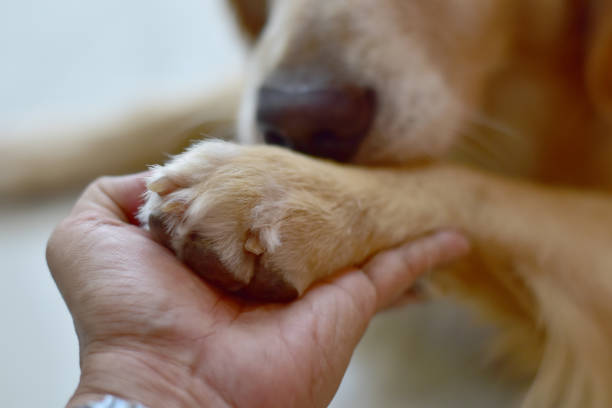

¡Únete a nosotros y haz una diferencia en la vida de un animal!
Adoptame es un centro de adopción de animales sin fines de lucro que trabaja para salvar la vida de animales abandonados y maltratados. Cada año, nuestro equipo rescata a cientos de animales de las calles, de hogares abusivos y de situaciones de peligro.
¿Quieres ayudar a hacer del mundo un lugar mejor para los animales? Únete a nuestro equipo de voluntarios y sé parte de la diferencia.
Hay muchas maneras de ayudar como voluntario en Adoptame. Puedes:
- Pasear a perros: Los perros necesitan ejercicio y atención, y los voluntarios pueden ayudar a proporcionarles eso.
- Limpiar las jaulas: Los animales necesitan un entorno limpio y seguro, y los voluntarios pueden ayudar a mantenerlo así.
- Interactuar con los animales: Los animales necesitan amor y atención, y los voluntarios pueden proporcionarles eso.
- Organizar eventos de recaudación de fondos: Los eventos de recaudación de fondos ayudan a recaudar fondos para el centro de adopción, y los voluntarios pueden ayudar a organizarlos.
No importa tu nivel de experiencia o habilidades, siempre hay algo que puedes hacer para ayudar.
Si estás interesado en ser voluntario en Adoptame, visita nuestra página web o comunícate con nosotros para obtener más información.
¡Gracias por tu interés en ayudar a los animales!
Algunos ejemplos de cómo puedes ayudar como voluntario:
- Puedes ayudar a limpiar las jaulas de los animales durante 1 hora o más.
- Puedes ayudar a interactuar con los animales durante 30 minutos o más.
- Puedes ayudar a organizar un evento de recaudación de fondos para el centro de adopción.
- Tu tiempo y esfuerzo son muy apreciados.
¿Quieres ayudar a los animales?
Además de adoptar una mascota, también puedes ayudarnos de otras maneras:
- Hazte voluntario en un refugio o protectora.
- Dona dinero o alimentos a una organización animalista.
-
- Educa a los niños sobre la importancia del respeto a los animales.
¡Dona y ayudanos a mantener nuestro refugio!.